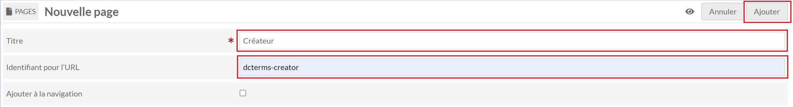
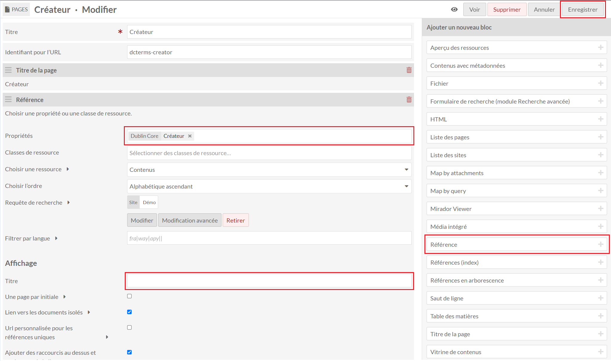
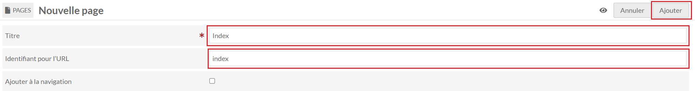
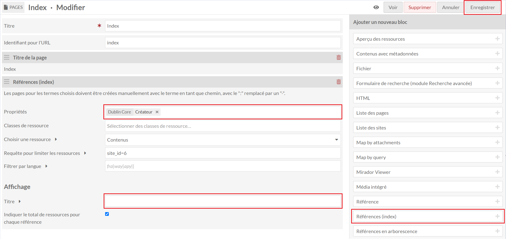
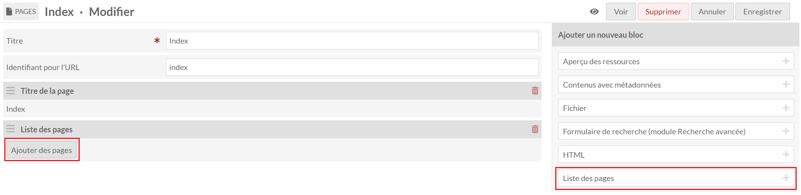
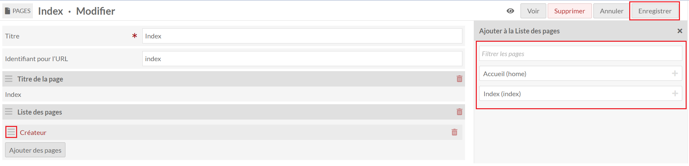

References
Le module References permet de créer des pages d'index avec les la liste des valeurs distinctes d'une propriété des ressources associées aux sites.
Créer une page avec un index
Note
Si le module Adm'Inist est intallé voir : Adm'Inist - création d'une page d'index

Il faut dans un premier temps créer une nouvelle page dans le site concerné.

Le champ Titre est libre. Pour le champ Identifiant de l'URL, il faut indiquer la forme "prefixe:propriété" en remplaçant ":" par "-".
Par exemple: pour la propriété Dublin Core Creator → dcterms-creator.

Il faut utiliser le bloc Référence dans la liste à droite. Un bloc supplémentaire apparaîtra à la suite du titre de la page.
Dans le bloc, il faut sélectionner la propriété à utiliser pour l'index et retirer le titre par défaut dans la partie Affichage.
Il peut être nécessaire d'actualiser la page si le paramètre "Propriétés" ne s'affiche pas correctement avec le bouton en haut Enregistrer en haut à droite.
Créer la liste d'index

Il faut dans un premier temps créer une nouvelle page dans le site concerné.

Le champ Titre est libre. Pour le champ Identifiant de l'URL, il faut indiquer "index".
Il existe plusieurs manières de créer la liste des index avec différents blocs.
Avec le bloc Références (index)

Dans le bloc, il faut sélectionner les propriétés à lister et retirer le titre par défaut dans la partie Affichage.
Les liens générés par ce bloc auront un suffixe avec le nombre de valeurs distinctes entre parenthèses et seront triés par ordre alphabétique de la forme "préfixe:propriété" des propriétés.
Il peut être nécessaire d'actualiser la page si le paramètre "Propriétés" ne s'affiche pas correctement avec le bouton en haut Enregistrer en haut à droite.
Avec le bloc Liste des pages

Dans le bloc, il faut sélectionner les pages d'index à lister en cliquant sur Ajouter des pages.

Dans la fenêtre s'ouvrant sur la droite, il faut sélectionner les pages à lister. Il est possible d'ordonnancer les pages sélectionnées en faisant un glisser/déposer avec l'icône présent à côté des titres des pages.
Les liens générés par ce bloc auront uniquement le titre de la page de cliquable.